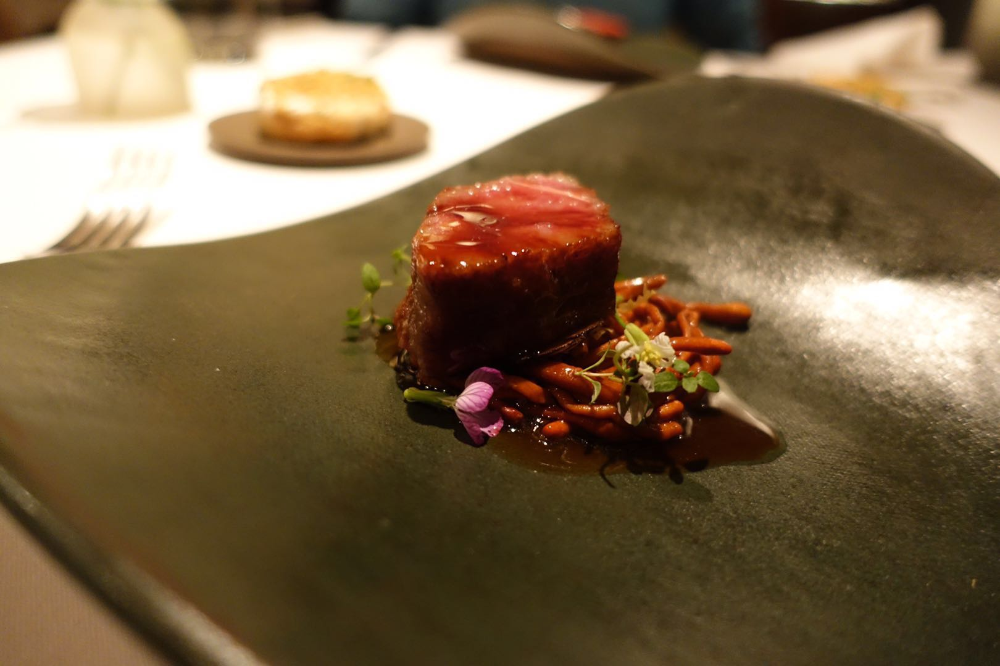
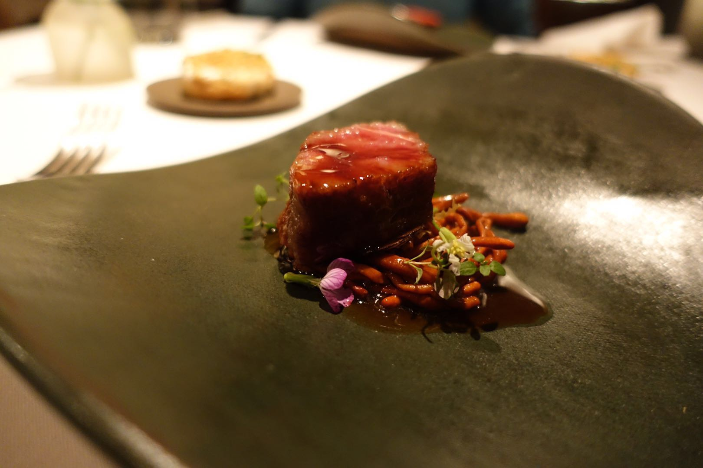
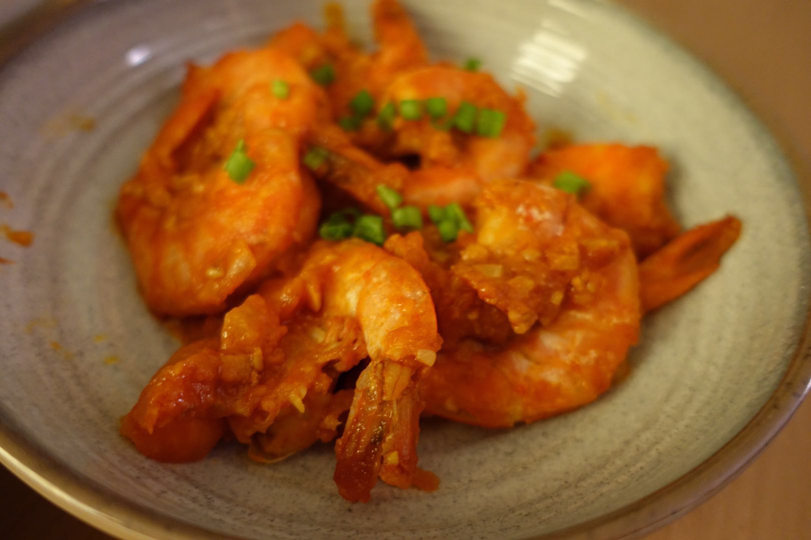

Oriole is a restaurant hidden down an alley-like street in Chicago’s West Loop neighborhood, offering an extended tasting menu presented by Executive Chef & Owner Noah Sandoval.

 


Check it out! The following are all home made cuisine!
